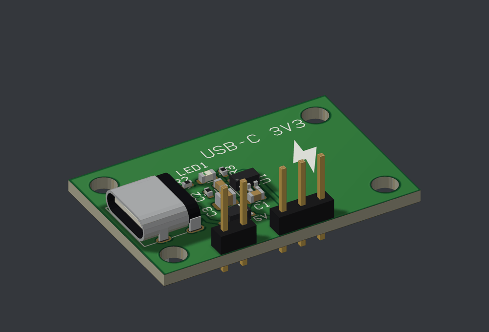
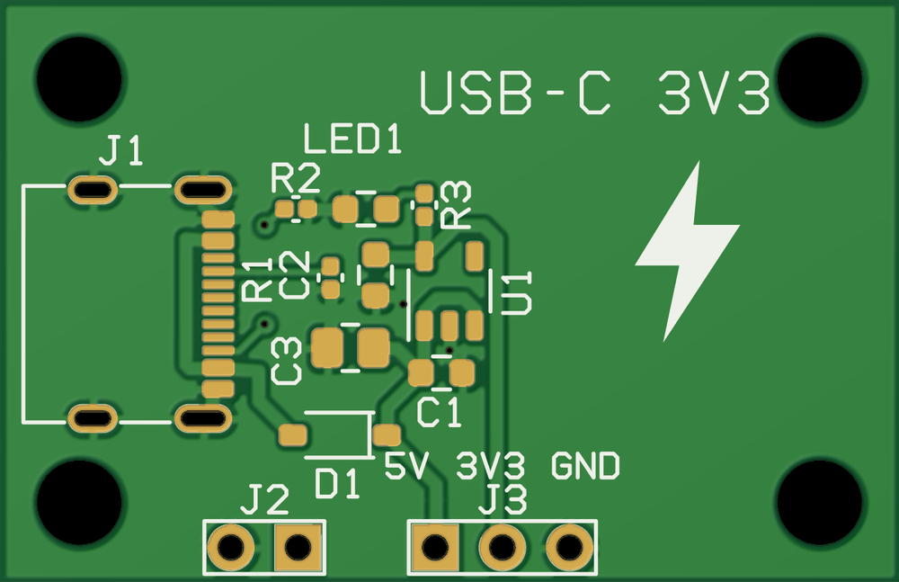
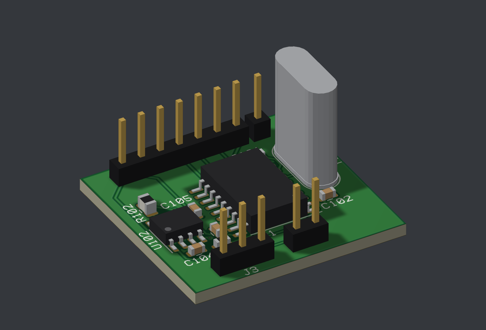

Design circuit boards with the agent you already use.
copperflow is a PCB design program that runs on your computer. Your agent places, routes and checks the board through MCP, with or without a window open; you draw in the same files, and every change it makes is one step you can undo.
npm install -g copperflowThat is the MCP server, which works headless. Or download the desktop app for Windows, macOS or Linux: a window, and the same server inside.

Two ways to install
copperflow runs headless: your agent designs a whole board through MCP with no window open, and answers with pictures of the schematic, the board and its 3D view, a one-page HTML of the design and the files a factory takes. Open the editor only when you want to watch the work or put your own hands on it.
Only the MCP server
For an agent that works on its own, a server or a terminal. Needs Node.js 22 or newer; the editor opens in
your browser with copperflow studio when you want it.
npm install -g copperflowOr with nothing installed, give your agent npx -y copperflow mcp as the command. The steps below connect it.
The desktop app
The editor in its own window with a start screen for your projects, and the same MCP server inside: its start screen connects Claude Desktop in one click. The agent still works with the window closed; with it open, you watch each change land. No Node.js needed.
-
Windows
Installer (.exe)Windows 10 or 11, 64-bit. Installs for you alone, no administrator needed.
-
macOS
Apple silicon (.dmg) Intel (.dmg)macOS 12 or newer.
-
Linux
AppImage Debian, Ubuntu (.deb)64-bit x86.
The apps are not signed by a developer certificate yet. On Windows choose More info, then Run anyway. On macOS, if it says it cannot check the app, open System Settings, Privacy & Security, and choose Open Anyway. On Linux make the AppImage executable first. Each release lists the files' SHA-256 checksums on its GitHub page.
A whole board with no window open
This USB-C to 3.3 V board came out of one agent session in an empty folder. The agent saw it only as the tools' short answers and the pictures they draw; nobody opened the editor.
note_decision Intent, Blocks, Open written to PROJECT.md
create_part Created AP2112K-3.3: 5 pins, footprint sot23_5
create_part Created TYPE-C-16P: 13 pins, footprint usb_c16
new_circuit Wrote usb-c-3v3.circuit.tsx: 12 parts, 7 nets
edit_circuit 4 holes, 3.2 mm, one in each corner
autoplace Placed 12 parts; 0 overlaps
edit_circuit GND pours on both sides
autoroute Routed 23 of 23 connections in 5 passes
check_circuit 0 errors, 0 warnings
render The board as made, the PCB, the 3D view
export 16 files: Gerbers, drills, BOM, STEP

Start
-
Install it
With the desktop app you are done here. From npm, copperflow needs Node.js 22 or newer.
npm install -g copperflow -
Connect your agent
Make a folder for the board and add copperflow to your agent there. With Claude Code:
mkdir my-board cd my-board claude mcp add copperflow -- copperflow mcpAny other MCP client works the same way: add a server that runs
copperflow mcpin the project folder. Connect your agent has the steps for Claude Desktop, Cursor, VS Code, Codex and Gemini CLI, and for the copperflow skill.{ "mcpServers": { "copperflow": { "command": "copperflow", "args": ["mcp"] } } } -
Open the editor
copperflow studioOpen the address it prints. The address carries a key for this session, so other web pages and other programs on your computer cannot use the editor.
-
Say what you want built
Design a CAN bus node: an MCP2515 controller, a TJA1051 transceiver, an 8 MHz crystal, one header for SPI and one for the bus. Two layers, as small as it routes.
The agent reads the guide that comes with copperflow, so you do not have to explain the tools. Watch the board appear in the editor and step in whenever you like.
Two pairs of hands on one board
- Lock what you have placed
- The agent cannot move or change a locked part. Only you unlock it.
- Leave a note on the board
- Write "route ground under this part" on a part or a spot on the canvas. The agent reads it as an instruction.
- Undo anything
- Each change the agent makes is one entry in the history. Undo it and the agent does not make it again.
- Your files stay yours
- Circuits are plain TSX files in your folder. Edits are written back as small text changes, so the rest of your code stays as you wrote it.
From an idea to files a factory accepts
- A schematic editor and a PCB editor over the same circuit.
- Automatic placement and routing, copper pours and mounting holes, with hand routing where you want it.
- Electrical and design rule checks against a fabrication profile: JLCPCB two-layer by default.
- A parts library where a person, not the agent, marks a part as checked against its datasheet.
- A bill of materials that says whether the board is ready to order, and Gerber and drill files to order it with.
- A DC simulation of each block, and rules for impedance, differential pairs and matched lengths.
- A pin map for your firmware, a STEP file for your mechanical CAD, and a board you already have in KiCad brought in as a new circuit.
- A picture of the board as it will be made, drawn from the same layers the factory gets, and a 3D view with the parts on it.

copperflow is at version 0.5 and early. Expect rough edges, and tell us where you find them.
It stays on your computer
There is no account and nothing is uploaded. This page sets no cookies and loads nothing from other sites. The editor is a page served from your own machine, the agent talks to a program on your own machine, and the project is a folder on your own disk. copperflow is open source under the Apache 2.0 licence.